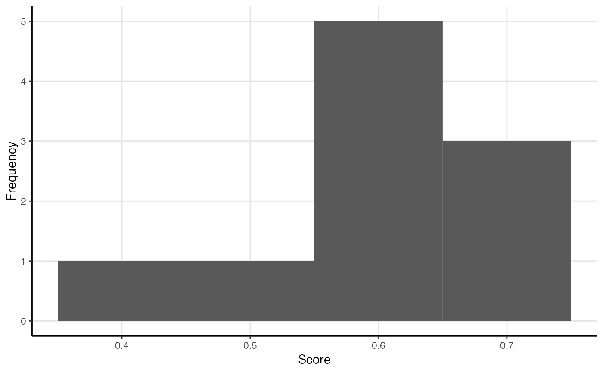

R/measure_centrality.R
close_centrality.RdThese functions calculate common closeness-related centrality measures for one- and two-mode networks:
node_closeness() measures the closeness centrality of nodes in a network.
node_reach() measures nodes' reach centrality,
or how many nodes they can reach within k steps.
node_harmonic() measures nodes' harmonic centrality or valued centrality,
which is thought to behave better than reach centrality for disconnected networks.
node_information() measures nodes' information centrality or
current-flow closeness centrality.
tie_closeness() measures the closeness of each tie to other ties in the network.
network_closeness() measures a network's closeness centralization.
network_reach() measures a network's reach centralization.
network_harmonic() measures a network's harmonic centralization.
All measures attempt to use as much information as they are offered,
including whether the networks are directed, weighted, or multimodal.
If this would produce unintended results,
first transform the salient properties using e.g. to_undirected() functions.
All centrality and centralization measures return normalized measures by default,
including for two-mode networks.
node_closeness(.data, normalized = TRUE, direction = "out", cutoff = NULL)
node_reach(.data, normalized = TRUE, k = 2)
node_harmonic(.data, normalized = TRUE, k = -1)
node_information(.data, normalized = TRUE)
tie_closeness(.data, normalized = TRUE)
network_closeness(.data, normalized = TRUE, direction = c("all", "out", "in"))
network_reach(.data, normalized = TRUE, k = 2)
network_harmonic(.data, normalized = TRUE, k = 2)An object of a {manynet}-consistent class:
matrix (adjacency or incidence) from {base} R
edgelist, a data frame from {base} R or tibble from {tibble}
igraph, from the {igraph} package
network, from the {network} package
tbl_graph, from the {tidygraph} package
Logical scalar, whether the centrality scores are normalized. Different denominators are used depending on whether the object is one-mode or two-mode, the type of centrality, and other arguments.
Character string, “out” bases the measure on outgoing ties, “in” on incoming ties, and "all" on either/the sum of the two. For two-mode networks, "all" uses as numerator the sum of differences between the maximum centrality score for the mode against all other centrality scores in the network, whereas "in" uses as numerator the sum of differences between the maximum centrality score for the mode against only the centrality scores of the other nodes in that mode.
Maximum path length to use during calculations.
Integer of steps out to calculate reach
Marchiori, M, and V Latora. 2000. "Harmony in the small-world". Physica A 285: 539-546.
Dekker, Anthony. 2005. "Conceptual distance in social network analysis". Journal of Social Structure 6(3).
Other centrality:
between_centrality,
degree_centrality,
eigenv_centrality
Other measures:
between_centrality,
closure,
cohesion(),
degree_centrality,
eigenv_centrality,
features,
heterogeneity,
hierarchy,
holes,
net_diffusion,
node_diffusion,
periods
node_closeness(mpn_elite_mex)
#> Trevino Madero Carranza Aguilar Obregon Calles `Aleman Gonzalez` `Portes Gil`
#> 1 0.4 0.405 0.466 0.493 0.436 0.459 0.466 0.493
#> # ... with 27 more values from this nodeset unprinted. Use `print(..., n = Inf)` to print all values.
node_closeness(ison_southern_women)
#> Evelyn Laura Theresa Brenda Charlotte Frances Eleanor Pearl Ruth Verne Myra
#> 1 0.8 0.727 0.8 0.727 0.6 0.667 0.667 0.667 0.706 0.706 0.686
#> # ... with 7 more values from this nodeset unprinted. Use `print(..., n = Inf)` to print all values.
#> E1 E2 E3 E4 E5 E6 E7 E8 E9 E10 E11 E12 E13
#> 1 0.524 0.524 0.564 0.537 0.595 0.688 0.733 0.846 0.786 0.564 0.537 0.579 0.537
#> # ... with 1 more values from this nodeset unprinted. Use `print(..., n = Inf)` to print all values.
node_reach(ison_adolescents)
#> Betty Sue Alice Jane Dale Pam Carol Tina
#> 1 0.714 1 1 0.714 0.857 1.14 0.714 0.429
(ec <- tie_closeness(ison_adolescents))
#> `Betty-Sue` `Sue-Alice` `Alice-Jane` `Sue-Dale` `Alice-Dale` `Jane-Dale`
#> 1 0.562 0.692 0.6 0.643 0.643 0.5
#> # ... with 4 more values from this nodeset unprinted. Use `print(..., n = Inf)` to print all values.
plot(ec)

#ison_adolescents %>%
# activate(edges) %>% mutate(weight = ec) %>%
# autographr()
network_closeness(ison_southern_women, direction = "in")
#> Mode 1 Mode 2
#> 0.214 0.528